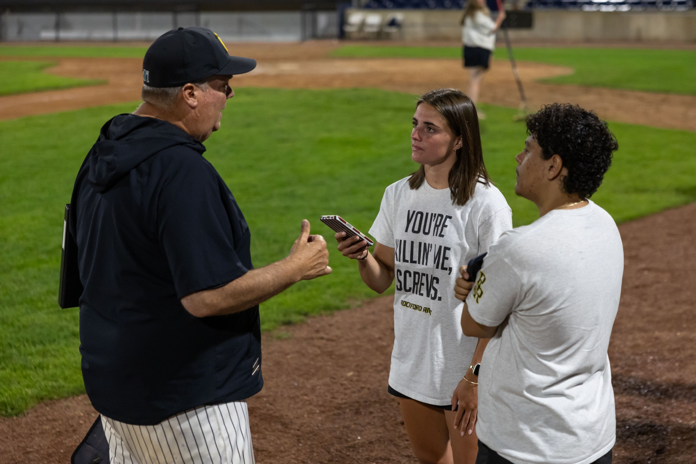
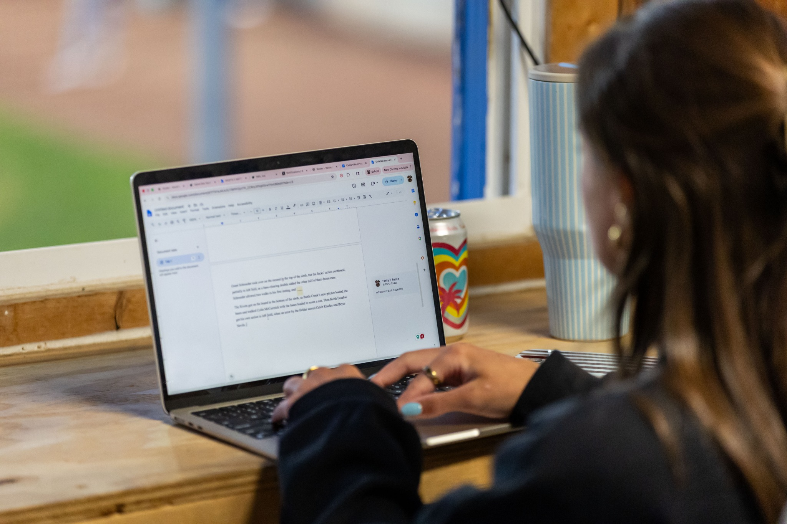

FEATURE 01 / ROCKFORD RIVETS
Rivets Win Big on Peaches Night with 15 Strikeouts

01Night of the game
02Postgame interview
03Publish that night
THE ASSIGNMENT
this was a game story i wrote during my internship with the Rockford Rivets. I wanted to make this story exciting and weave in some references to the movie "a league of their own" because the Peaches Night was to honor the Rockford Peaches, who inspired the film. i completedan interview with the coach post game and wrote the story and posted it that night

READ THE FINISHED STORY
Open published story